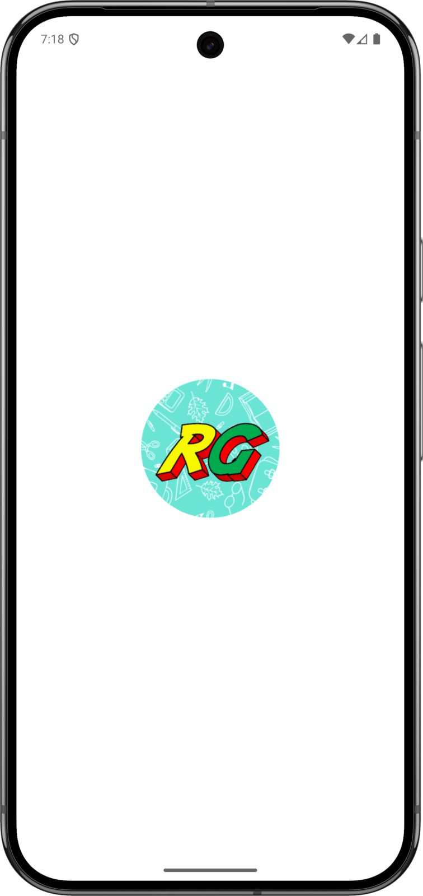

RisveGino - Mobile Application
Mobile version of the "RisveGino" manual of Risvegliati VIP Brescia.
Dart
Flutter
Mobile version of the "RisveGino" manual of Risvegliati VIP Brescia.
RisveGino is the digital field manual for Risvegliati VIP Brescia, an association of volunteer clown doctors who run scheduled clown-therapy services in hospitals, care homes and other health and social facilities. It puts everything a volunteer needs about each partner structure in their pocket.
The home screen lists every structure as a card, with free-text search over name and address and quick filter chips for day of the week and structure type. Tapping a card opens the complete profile of the service, and the address opens directly in Google Maps for turn-by-turn directions.
The manual is kept up to date from the cloud: the app pulls the latest version, compares it with the copy on the device and tells the volunteer exactly which structures are new or which fields changed.

The detail sheet shows schedule and time, capacity, the responsible angel, beneficiaries, expected operators, preparation notes and service organisation, together with the association's operational rules: who to notify if you cannot attend, how to report attendance and an explicit reminder not to post photos from inside a facility.
A Flutter app for Android and iOS. The structure data is a single file hosted in the cloud and synchronised through its API, push notifications use Firebase Cloud Messaging with a shared topic, and local notifications appear even while the app is open.
Implements the app's state, data model and business logic: parsing the structure data, driving search and filters, and computing the diff used to summarise updates.
Provides the single cross-platform UI for Android and iOS — the structure list, filter chips, sliver-based detail screen with a collapsing header, and the custom clown-themed styling and animations.
Delivers push notifications to every installed app, broadcasting manual updates to the "strutture" topic and waking a background sync so volunteers see fresh data without manually checking.
Shows a native notification when a push message arrives while the app is already open in the foreground, on both Android (via a dedicated high-priority channel) and iOS.
Hosts the canonical manual file that every device synchronises from.
Opens a structure's address directly in Google Maps from the detail screen, handing off navigation to the device's native maps app.
Locates the app's documents folder so synced data can be cached on the device and reloaded without a network round-trip.